# OPTION 1: Load HELP dataset in .Rdata format
load("help.RData")Day 1: Session 2
Data Wrangling and Visualization
Session Objectives
- Get Started with H.E.L.P. Dataset
- Selecting and Exporting Data
- A. Selecting Exporting Data (variables and subsets)
- B. Exporting Data (variables and subsets)
- Getting descriptive statistics
- Getting started with visualization
0. Prework - Before You Begin
- R Packages Needed for this session:
- R Code Files
- SAS Code Files
- R Data Files
- SAS Data Files
- Other Data Files - OPTIONAL
1. Get Started with H.E.L.P. Dataset
For this course we will be working with the HELP dataset from this BOOK:
- “SAS and R: Data Management, Statistical Analysis, and Graphics (second edition)” by Ken Kleinman and Nicholas J. Horton
- HELP Dataset
- This data was collected for the H.E.L.P. (Health Evaluation and Linkage to Primary Care) trial, (Samet et al. 2003)
Options for importing/loading the HELP Dataset
The easiest option is to simply load the data in the *.Rdata native binary format, which is provided at the HELP dataset link.
The dataset is also provided in the *.sas7bdat SAS data format. To load SAS formatted dataset, we can use the read_sas() function from the haven package.
Another way to import this SAS formatted dataset is to use the menu functions “File/Import Dataset/From SAS”:
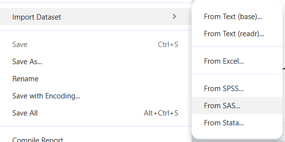
This opens a window that defaults to files located in the current project folder. From here we can select the help.sas7bdat file. We could go ahead and click the “Import” button OR we can copy the R code generated in the Code Preview window, which is the code we have above.
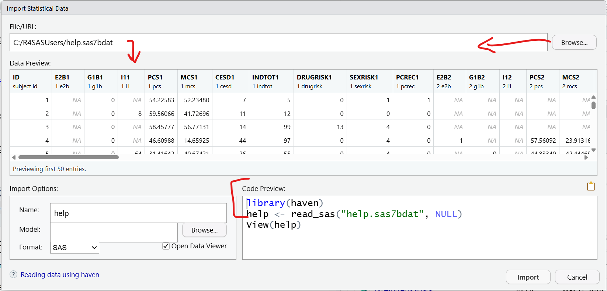
We can also use the haven package to use the read_sav() function to read in a SPSS formatted dataset as well.
The CSV (comma separated value) file format is also readily available for many datasets as well. We can use the read_csv() function from the readr package.
After loading the dataset (help.Rdata), the dataset should now be visible in the Global Environment window at the top right:
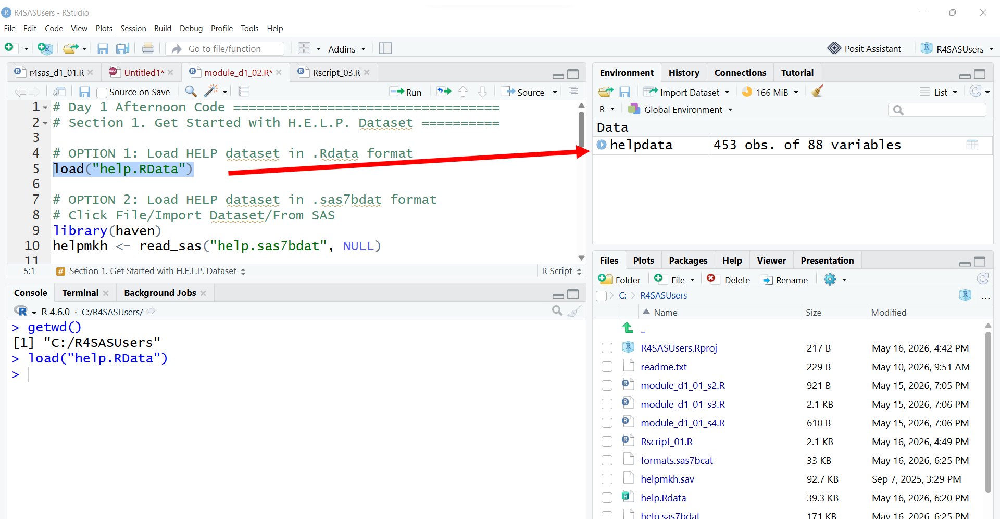
We can take a look at what is in this dataset, by clicking on the little blue circle with an arrow in it:
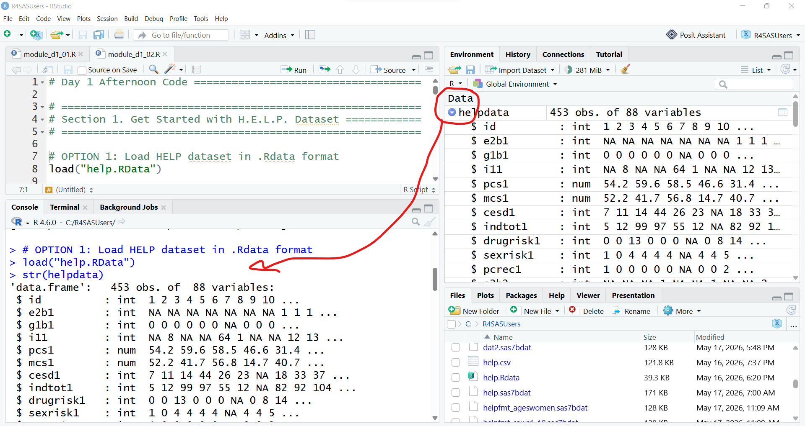
This provides the same info as running str() function Notice that we can see there are 453 observations (rows) and 88 variables (columns). We can also see that variables like id, e2b1 are “int” (integers) and pcs1 and mcs1 are “num” (numeric) type variables. We can also see that helpdata is a data.frame object.
We can also get more information on this dataset using these functions.
# find out what kind of object helpdata is
class(helpdata)[1] "data.frame"# what are the dimension, rows -x- cols
dim(helpdata)[1] 453 88# what are all of the names of the variables
names(helpdata) [1] "id" "e2b1" "g1b1" "i11" "pcs1"
[6] "mcs1" "cesd1" "indtot1" "drugrisk1" "sexrisk1"
[11] "pcrec1" "e2b2" "g1b2" "i12" "pcs2"
[16] "mcs2" "cesd2" "indtot2" "drugrisk2" "sexrisk2"
[21] "pcrec2" "e2b3" "g1b3" "i13" "pcs3"
[26] "mcs3" "cesd3" "indtot3" "drugrisk3" "sexrisk3"
[31] "pcrec3" "e2b4" "g1b4" "i14" "pcs4"
[36] "mcs4" "cesd4" "indtot4" "drugrisk4" "sexrisk4"
[41] "pcrec4" "a15a" "a15b" "d1" "e2b"
[46] "f1a" "f1b" "f1c" "f1d" "f1e"
[51] "f1f" "f1g" "f1h" "f1i" "f1j"
[56] "f1k" "f1l" "f1m" "f1n" "f1o"
[61] "f1p" "f1q" "f1r" "f1s" "f1t"
[66] "g1b" "i1" "i2" "age" "treat"
[71] "homeless" "pcs" "mcs" "cesd" "indtot"
[76] "pss_fr" "drugrisk" "sexrisk" "satreat" "drinkstatus"
[81] "daysdrink" "anysubstatus" "daysanysub" "linkstatus" "dayslink"
[86] "female" "substance" "racegrp"
TipGet variable names with and without quotes
[1] id e2b1 g1b1 i11 pcs1
[6] mcs1 cesd1 indtot1 drugrisk1 sexrisk1
[11] pcrec1 e2b2 g1b2 i12 pcs2
[16] mcs2 cesd2 indtot2 drugrisk2 sexrisk2
[21] pcrec2 e2b3 g1b3 i13 pcs3
[26] mcs3 cesd3 indtot3 drugrisk3 sexrisk3
[31] pcrec3 e2b4 g1b4 i14 pcs4
[36] mcs4 cesd4 indtot4 drugrisk4 sexrisk4
[41] pcrec4 a15a a15b d1 e2b
[46] f1a f1b f1c f1d f1e
[51] f1f f1g f1h f1i f1j
[56] f1k f1l f1m f1n f1o
[61] f1p f1q f1r f1s f1t
[66] g1b i1 i2 age treat
[71] homeless pcs mcs cesd indtot
[76] pss_fr drugrisk sexrisk satreat drinkstatus
[81] daysdrink anysubstatus daysanysub linkstatus dayslink
[86] female substance racegrp We can also “view” the dataset, by clicking on the little table icon at the far right. Clicking the icon runs the View() function which loads the viewer window.
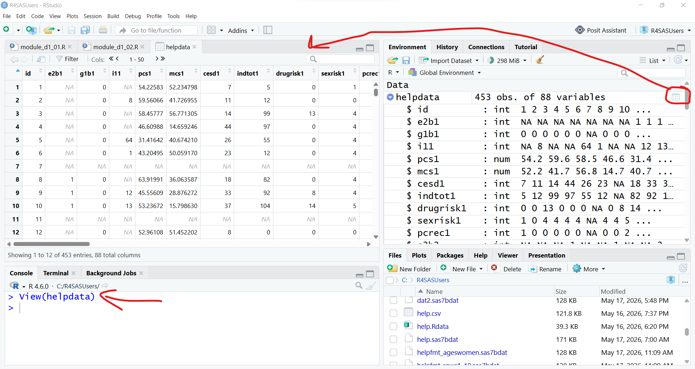
SAS Environment
Remember that we started with creating an RStudio Project for the folder C:\R4SASUsers. This process is similar to beginning your SAS compute session by setting a LIBNAME statement, so that SAS knows where your files are for your current project.
And I typically use the DATA step to make a copy of my data into the WORK library for the current computation session. The WORK library is like the Global Environment in R.
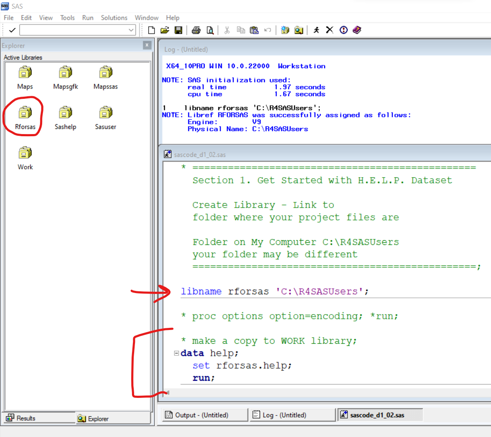
2. Selecting and Exporting Data
Now that we have the HELP dataset loaded into our computing session, we can start working with the helpdata dataset object.
2A. Selecting Data (variables and subsets)
Selecting Variables or Columns - Base R approach
Using base R we can “select” variables out of the helpdata dataset using the $ dollar sign.
# select the age variable
# from helpdata and show in Console
helpdata$age [1] 37 37 26 39 32 47 49 28 50 39 34 58 58 60 36 28 35 29 27 27 41 33 34 31 48
[26] 34 35 34 29 35 43 37 29 33 20 38 28 33 40 43 28 45 42 30 34 36 44 41 30 37
[51] 35 37 44 47 38 37 34 41 29 35 36 27 36 40 38 42 26 41 43 28 30 42 22 31 30
[76] 25 26 35 53 29 32 24 35 32 47 26 45 33 45 33 27 40 40 37 26 27 35 29 33 39
[101] 33 35 38 44 28 33 30 35 32 42 37 41 28 30 35 35 41 37 30 39 32 50 33 27 33
[126] 38 43 24 35 49 49 33 24 28 45 46 37 32 45 39 34 32 32 31 45 30 36 25 48 42
[151] 33 36 41 30 57 57 47 54 55 33 29 33 28 37 28 32 31 36 39 29 38 33 31 39 33
[176] 31 46 36 22 33 35 38 28 33 49 43 33 29 34 41 47 24 31 40 32 32 39 19 49 27
[201] 38 32 22 36 32 35 35 41 36 43 45 39 47 32 33 39 44 35 31 25 48 35 42 51 55
[226] 32 41 34 30 34 38 41 31 29 36 45 36 30 40 27 39 39 37 43 20 35 32 42 27 30
[251] 27 41 32 47 36 32 33 30 29 34 34 40 45 37 32 26 31 39 49 45 43 38 23 35 23
[276] 42 29 43 29 39 32 35 22 39 38 56 36 40 22 39 47 32 41 32 37 41 31 33 30 32
[301] 35 32 33 30 44 46 43 47 34 47 40 34 48 37 35 38 27 39 23 35 53 31 32 33 25
[326] 37 26 29 30 47 33 36 23 36 34 28 33 26 30 41 31 28 59 39 36 47 26 22 36 34
[351] 27 34 21 33 42 46 26 36 47 48 32 38 43 30 40 38 22 39 22 37 37 44 38 37 43
[376] 39 45 39 31 32 42 33 47 24 27 38 53 39 32 27 43 31 41 27 28 39 39 21 29 31
[401] 29 45 25 24 41 27 21 27 31 41 33 49 41 25 41 34 29 28 29 36 36 24 38 31 26
[426] 35 26 33 46 33 39 27 33 36 23 33 26 38 52 39 36 44 37 33 31 25 31 24 33 49
[451] 39 59 45If we don’t want to simply see the result in the “Console” window, we can save the result into a new object to use later.
# save as separate object
ages <- helpdata$age
dplyr approach using pipes
A better way is to use the dplyr package which uses a stepwise computing approach with the magrittr pipe %>%. What is a “pipe”?
In computer programming a “pipe” allows you to take the output from the preceding command and “send it” as input to the next command.
Let’s take a look at the help page for the select() function from the dplyr package.
Use select(helpdata, age) to select the age variable from the helpdata dataset.
age
1 37
2 37
3 26
4 39
5 32
6 47
7 49
8 28
9 50
10 39
11 34
12 58
13 58
14 60
15 36
16 28
17 35
18 29
19 27
20 27
21 41
22 33
23 34
24 31
25 48
26 34
27 35
28 34
29 29
30 35
31 43
32 37
33 29
34 33
35 20
36 38
37 28
38 33
39 40
40 43
41 28
42 45
43 42
44 30
45 34
46 36
47 44
48 41
49 30
50 37
51 35
52 37
53 44
54 47
55 38
56 37
57 34
58 41
59 29
60 35
61 36
62 27
63 36
64 40
65 38
66 42
67 26
68 41
69 43
70 28
71 30
72 42
73 22
74 31
75 30
76 25
77 26
78 35
79 53
80 29
81 32
82 24
83 35
84 32
85 47
86 26
87 45
88 33
89 45
90 33
91 27
92 40
93 40
94 37
95 26
96 27
97 35
98 29
99 33
100 39
101 33
102 35
103 38
104 44
105 28
106 33
107 30
108 35
109 32
110 42
111 37
112 41
113 28
114 30
115 35
116 35
117 41
118 37
119 30
120 39
121 32
122 50
123 33
124 27
125 33
126 38
127 43
128 24
129 35
130 49
131 49
132 33
133 24
134 28
135 45
136 46
137 37
138 32
139 45
140 39
141 34
142 32
143 32
144 31
145 45
146 30
147 36
148 25
149 48
150 42
151 33
152 36
153 41
154 30
155 57
156 57
157 47
158 54
159 55
160 33
161 29
162 33
163 28
164 37
165 28
166 32
167 31
168 36
169 39
170 29
171 38
172 33
173 31
174 39
175 33
176 31
177 46
178 36
179 22
180 33
181 35
182 38
183 28
184 33
185 49
186 43
187 33
188 29
189 34
190 41
191 47
192 24
193 31
194 40
195 32
196 32
197 39
198 19
199 49
200 27
201 38
202 32
203 22
204 36
205 32
206 35
207 35
208 41
209 36
210 43
211 45
212 39
213 47
214 32
215 33
216 39
217 44
218 35
219 31
220 25
221 48
222 35
223 42
224 51
225 55
226 32
227 41
228 34
229 30
230 34
231 38
232 41
233 31
234 29
235 36
236 45
237 36
238 30
239 40
240 27
241 39
242 39
243 37
244 43
245 20
246 35
247 32
248 42
249 27
250 30
251 27
252 41
253 32
254 47
255 36
256 32
257 33
258 30
259 29
260 34
261 34
262 40
263 45
264 37
265 32
266 26
267 31
268 39
269 49
270 45
271 43
272 38
273 23
274 35
275 23
276 42
277 29
278 43
279 29
280 39
281 32
282 35
283 22
284 39
285 38
286 56
287 36
288 40
289 22
290 39
291 47
292 32
293 41
294 32
295 37
296 41
297 31
298 33
299 30
300 32
301 35
302 32
303 33
304 30
305 44
306 46
307 43
308 47
309 34
310 47
311 40
312 34
313 48
314 37
315 35
316 38
317 27
318 39
319 23
320 35
321 53
322 31
323 32
324 33
325 25
326 37
327 26
328 29
329 30
330 47
331 33
332 36
333 23
334 36
335 34
336 28
337 33
338 26
339 30
340 41
341 31
342 28
343 59
344 39
345 36
346 47
347 26
348 22
349 36
350 34
351 27
352 34
353 21
354 33
355 42
356 46
357 26
358 36
359 47
360 48
361 32
362 38
363 43
364 30
365 40
366 38
367 22
368 39
369 22
370 37
371 37
372 44
373 38
374 37
375 43
376 39
377 45
378 39
379 31
380 32
381 42
382 33
383 47
384 24
385 27
386 38
387 53
388 39
389 32
390 27
391 43
392 31
393 41
394 27
395 28
396 39
397 39
398 21
399 29
400 31
401 29
402 45
403 25
404 24
405 41
406 27
407 21
408 27
409 31
410 41
411 33
412 49
413 41
414 25
415 41
416 34
417 29
418 28
419 29
420 36
421 36
422 24
423 38
424 31
425 26
426 35
427 26
428 33
429 46
430 33
431 39
432 27
433 33
434 36
435 23
436 33
437 26
438 38
439 52
440 39
441 36
442 44
443 37
444 33
445 31
446 25
447 31
448 24
449 33
450 49
451 39
452 59
453 45However, we can use a pipe programming approach and re-write this line of code in 2 steps by listing the dataset first “and then” selecting the “age” variable from this dataset. Notice the %>% pipe operator at the end of the first line of code.
The following 2 figures show that the %>% pipe operator takes the output helpdata and “sends it” into the select() function as the first argument. The second argument age which is the variable to be selected is then listed in the 2nd step of the code sequence after the %>% pipe operator.
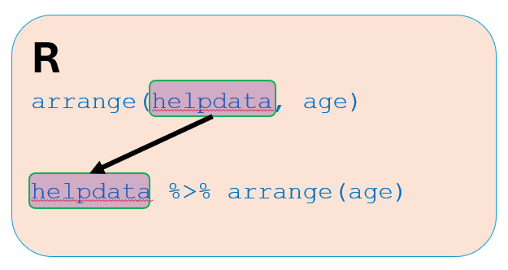
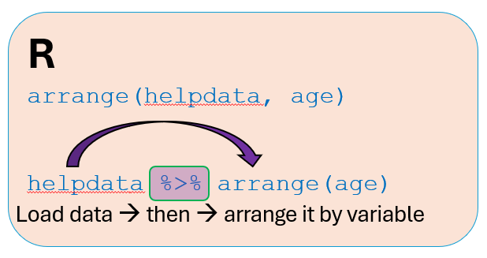
We can continue using the %>% pipe operator to put together multiple code steps in sequence where the output from the preceding function call is used as input to the next function call.
This block of code does the following:
- load the
helpdatadataset “and then” - selects the
agevariable fromhelpdata“and then” - shows the top 10 rows of ages using the
help()function.
age
1 37
2 37
3 26
4 39
5 32
6 47
7 49
8 28
9 50
10 39We can also save the ages from the HELP dataset into another object called ages2 but this time using the dplyr select() function.
NoteProgramming pipes
%>% vs|>
For the purpose of this course, I will stick with the magrittr pipe %>%. However, there is also a “base R” pipe |>. For the most part these are interchangeable. however, there are a few differences discussed in this blog post.
Base R versus dplyr approaches - differences in output
Both the “base R” and dplyr approaches will select the ages of the participants from the dataset. However, the resulting ages or ages2 objects are slightly different. We can see how they look in the Global Environment window and by comparing the results from the class() function.
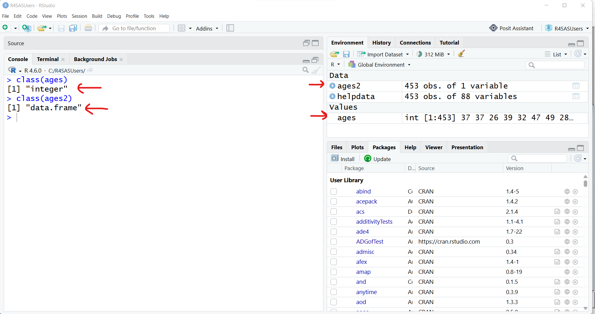
The “base R”approach results in a vector of integer numbers. The dplyr approach results in a simple data.frame object with 1 column - the dplyr approach preserves the original object type of helpdata.
# base R approach result
class(ages)[1] "integer"# dplyr approach result
class(ages2)[1] "data.frame"We can always select more than one variable at at time by simply listing them separated by a comma. Notice that we do not need the quotes around the variable names.
Selecting Rows - Base R
Another “Base R” method to select variables includes using indexes. For example select rows 1:10 and column 69 (which is age). We could also specify the "age" column name using “base R” syntax of data[rownum, colnum] or data[rownum, colname].
# Base R approach
# pull out rows 1-10 and column 69 (which is age)
# dataset[row,column] index approach
helpdata[1:10, 69] [1] 37 37 26 39 32 47 49 28 50 39# another option, use variable name
helpdata[1:10, "age"] [1] 37 37 26 39 32 47 49 28 50 39We could also filter out the males and only keep the rows of data for the females. The “Base R” approach gets a little tricky:
# select women, get stats for age
# female coded as
# 0 for men
# 1 for women
# Use == for logical check of equality
# learn more
# help('==', package ="base")
ageswomen <- helpdata[helpdata$female == 1, "age"]
ImportantThe difference between
== and =
R uses a single equal sign = for assigning a value to an argument in a function. For example, plot(x=xdata, y=ydata) to assign the variable to the x and y axes in a plot. But if we want to check to see if two objects are the same or match in a logical sense, we need to use == to see if two things match or not, helpdata$female == 1. This results in values of TRUE or FALSE which are reserved logical values in R. R then uses the values of TRUE or FALSE to parse which rows to keep or remove.
Selecting Rows - dplyr Approach
As you’ve seen above the base R approach gets tricky quickly. This is why learning the dplyr approach is good - the code is much easier to understand.
There are 2 main approaches for choosing a subset of rows out of a dataset using dplyr - either the slice() or filter() functions.
In the output below, again notice the difference between the “Base R” and dplyr approach output for ageswomen and ageswomen2.
age
1 37
2 37
3 26
4 39
5 32
6 47
7 49
8 28
9 50
10 39 age
1 37
2 37
3 26
4 39
5 32
6 47
7 49
8 28
9 50
10 39In summary, the dplyr programming approach using pipes %>% is easier to read and understand than the more complicated nested syntax of the Base R approach. The dplyr webpage has a nice article summarizing these differences at https://dplyr.tidyverse.org/articles/base.html#one-table-verbs.
SAS Code for quick comparison
Here is the SAS code that also does the same data selection examples as above.
-
firstobsandobsoptions are used instead of thedplyrslice()function above -
keepis similar to thedplyrselect()function - for the logical filter step, we can use the SAS
wherestatement
data helpfmt_rows1_10;
set helpfmt(firstobs=1 obs=10); /* keep rows 1-10*/
keep age cesd; /* Only keep age and cesd */
run;
* save ages for women;
data helpfmt_ageswomen;
set helpfmt;
where female = 1; /* keep women */
keep age; /* Only keep age */
run;2B. Exporting Data (variables and subsets)
Now that we have created two new datasets, agecesd and ageswomen2, we could save these as R binary *.RData files for use in future computing sessions.
Check your local file folder for this project - you should now have two new datafiles:
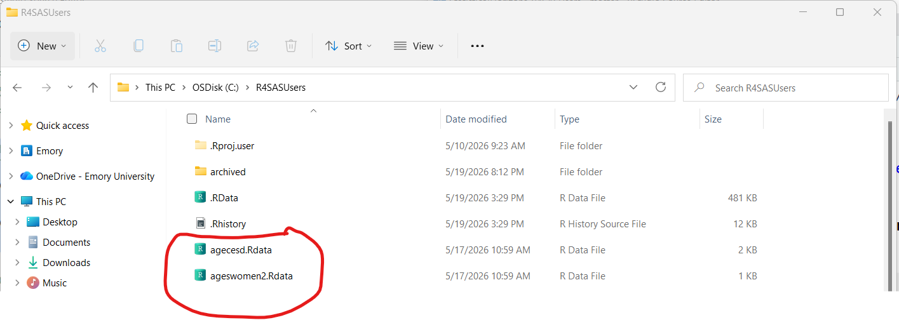
You could also save more than one object at a time into an R binary datafile - this can be very useful. These objects do NOT have to be datasets - they could be ANY kind of R object (models, graphic plots, custom functions and more).
save(ages, ages2, ageswomen,
file = "otherobjects.Rdata")Let’s remove these objects and reload them. We can use the list ls() function to see all of the object currently loaded into the Global Environment for this R computation session. The rm() function removes the objects we specify.
# let's remove these objects and reload them
# list objects in Global Environment
ls()[1] "agecesd" "ages" "ages2" "ageswomen" "ageswomen2"
[6] "help" "helpdata" "helpmkh" "helpmkh2" [1] "help" "helpdata" "helpmkh" "helpmkh2"Now load back agecesd from agecesd.Rdata and ages, ages2, ageswomen from otherobjects.Rdata.
[1] "agecesd" "help" "helpdata" "helpmkh" "helpmkh2"[1] "agecesd" "ages" "ages2" "ageswomen" "help" "helpdata"
[7] "helpmkh" "helpmkh2" Suppose you want to keep everything (all of the objects) in your current Global Environment, you can also use save.image() which will save everything so you don’t have to list every object individually.
# if you want to save everything in your
# global environment at the moment
save.image(file = "allobjects.Rdata")Remove everything and then load it all back.
SAS Code for quick comparison
* write these new datasets to your project folder ;
data rforsas.helpfmt_rows1_10;
set work.helpfmt_rows1_10;
run;
data rforsas.helpfmt_ageswomen;
set work.helpfmt_ageswomen;
run;
* Look at rforsas Library;
* look at WORK Library;
proc datasets lib=work nolist;
delete helpfmt_rows1_10 helpfmt_ageswomen;
quit;
* read saved datasets back in to
WORK library if wanted;
data work.helpfmt_ageswomen;
set rforsas.helpfmt_ageswomen;
run;3. Getting descriptive statistics
R - Quick summary() statistics
Besides the class() function for figuring out what an object’s type is, the summary() function is another workhorse in the R language.
NoteGeneric functions
For now, let’s use the summary() function on a variable from a dataset. Technically this runs summary.default(), see help(summary.default).
Let’s get some summary statistics for age from helpdata.
# Get descriptive statistics with summary()
# get min, max, mean, median and quartiles
summary(helpdata$age) Min. 1st Qu. Median Mean 3rd Qu. Max.
19.00 30.00 35.00 35.65 40.00 60.00 This is a really helpful quick way to get summary statistics. I just wish the original programmers had also included the standard deviation in the output which would give me the parametric statistics: mean and sd as well as the non-parametric stats: median, 25th percentile and 75th percentile along with the min and max.
Here is the dplyr approach:
SAS - summary statistics with PROC UNIVARIATE
There are many different ways to get summary descriptive statistics for variables in SAS. I often use PROC UNIVARIATE for this purpose.
* get descriptive statistics of age;
proc univariate data=help plots;
var age;
run;R - More individual functions for descriptive stats
Let’s also get the standard deviation using sd()
# base R
sd(helpdata$age)[1] 7.710266Error in `is.data.frame()`:
! 'list' object cannot be coerced to type 'double'OOPS This throws and error. Let’s figure out why.
[1] "data.frame"See help(sd) to see that the sd() function is expecting a numeric vector as input and NOT a data.frame. So we need to either convert the output using unlist() after select() or use a different selection function like pull() from dplyr. NOTE: A data.frameis a special type of list class object in R.
[1] 7.710266The dplyr package also has the pull() function which results in a vector and NOT a data.frame output object.
[1] 7.710266What if we have missing data indicated by NA in our dataset?
Let’s generate a numeric vector with a missing value and then see what happens with these functions.
# vector of numeric values
x <- c(1,2,3,4,5,NA)
x[1] 1 2 3 4 5 NA# get summary statistics
summary(x) Min. 1st Qu. Median Mean 3rd Qu. Max. NAs
1 2 3 3 4 5 1 This worked, but notice the summary output clearly shows we have 1 NA value.
What about the sd() function?
# try the sd() function
sd(x)[1] NAThe value returned was NA. This can be frustrating, but there is a method to the madness. Technically, since there is a value missing, we have to explicitly tell the sd() function what we want to do - do we want to remove the missing values and then compute the standard deviation. We can do that by setting the argument for na.rm to TRUE.
It is also good that we get NA in our output since this tells us we have missing data in our dataset for this variable which prompts us to make decisions on how to handle or adjust for the missing data BEFORE completing the analysis or computations.
It is a good idea to just get in the habit of adding na.rm=TRUE to these functions to make sure you are providing explicit instructions on how to handle the missing data.
R - parametric and non-parametric stats
Base R code adding na.rm=TRUE:
# adjust for missing values
# parametric stats
mean(helpdata$age, na.rm=TRUE)[1] 35.65342sd(helpdata$age, na.rm=TRUE)[1] 7.710266# get non-parametric statistics
min(helpdata$age, na.rm=TRUE)[1] 19max(helpdata$age, na.rm=TRUE)[1] 60median(helpdata$age, na.rm=TRUE)[1] 35quantile(helpdata$age, probs = 0.25, na.rm=TRUE)25%
30 quantile(helpdata$age, probs = 0.75, na.rm=TRUE)75%
40
WarningDefault settings!
NOTE: Pay attention to default settings! For the quantile() function to compute percentiles, be sure to check the default settings for this function. There are 9 possible algorithms you can choose from. The default is type=7. This may not match other software packages default algorithms. For large sample sizes these differences should be minor. But for smaller sample sizes, these algorithms from computing percentiles may/will be different.
Let’s look at the help window for quantile().
help(quantile, package = "stats")Quantile Help Windows
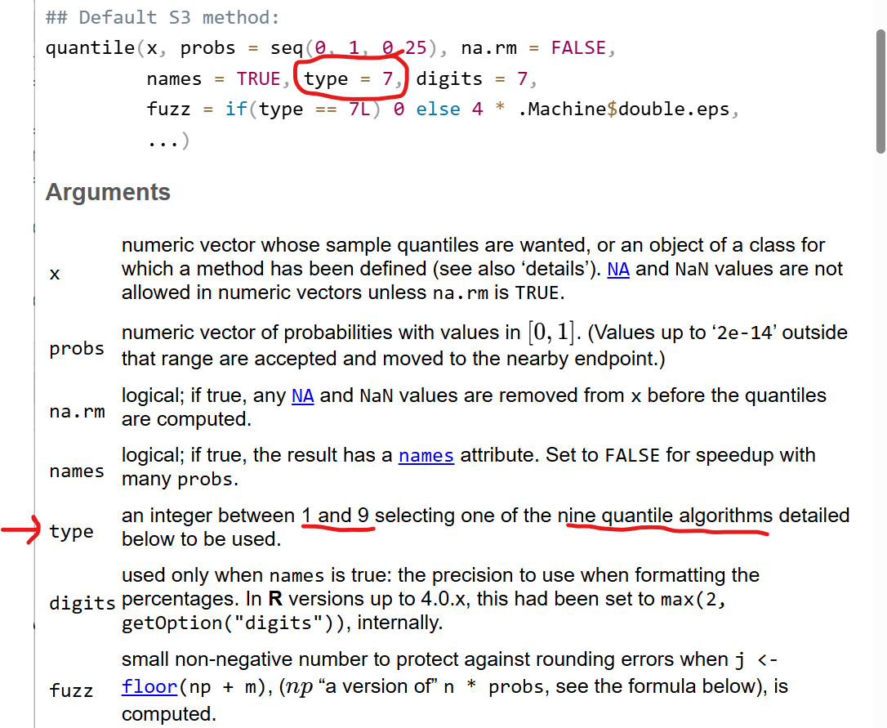
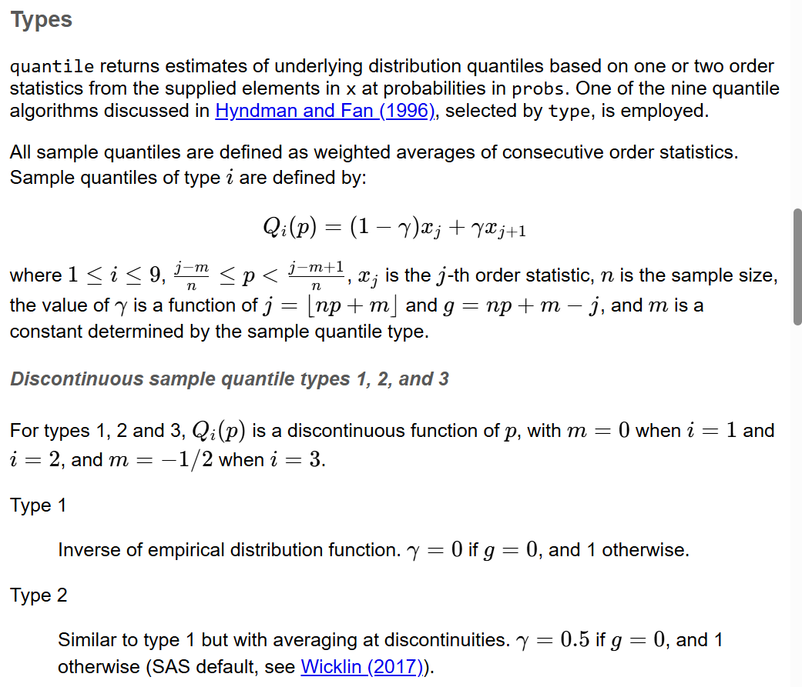
Compare the output differences between using algorithm type=7 to type=9:
SAS - parametric and non-parametric stats
To produce neatly formatted tables of summary statistics, I also like using PROC MEANS in SAS.
* another approach with proc means
- get parametric statistics;
proc means data=help n min max mean std;
var age;
run;
* another approach with proc means
- get non-parametric statistics;
proc means data=help n q1 median q3;
var age;
run;
* There are 5 options for quantile
calculation in SAS, see SAS help for
"Quantile and Related Statistics"
QNTLDEF=5 is the default
compare to QNTLDEF=4;
proc means data=help q1 median q3 QNTLDEF=4;
var age;
run;R - dplyr approach for custom statistics
dplyr approach to show multiple custom statistics all in the same output.
# create custom output
helpdata %>%
summarise(
age_n = n(),
meanage = mean(age, na.rm=TRUE),
sdage = sd(age, na.rm=TRUE),
medage = median(age, na.rm=TRUE),
q25age = quantile(age,
probs = 0.25,
na.rm=TRUE),
q75age = quantile(age,
probs = 0.75,
na.rm=TRUE),
minage = min(age, na.rm=TRUE),
maxage = max(age, na.rm=TRUE)
) age_n meanage sdage medage q25age q75age minage maxage
1 453 35.65342 7.710266 35 30 40 19 60Let’s leverage other functions in dplyr to help. Let’s get the custom statistics for the women only by adding filter(female == 1).
# get age stats for women only
helpdata %>%
filter(female == 1) %>%
summarise(
age_n = n(),
meanage = mean(age, na.rm=TRUE),
sdage = sd(age, na.rm=TRUE),
medage = median(age, na.rm=TRUE),
q25age = quantile(age,
probs = 0.25,
na.rm=TRUE),
q75age = quantile(age,
probs = 0.75,
na.rm=TRUE),
minage = min(age, na.rm=TRUE),
maxage = max(age, na.rm=TRUE)
) age_n meanage sdage medage q25age q75age minage maxage
1 107 36.25234 7.584858 35 31 40.5 21 58We can also use the group_by function to get stratified output by group as well. Let’s look at these statistics for each of the 4 race/ethnicity groups:
# get age stats by racegrp
helpdata %>%
group_by(racegrp) %>%
summarise(
age_n = n(),
meanage = mean(age, na.rm=TRUE),
sdage = sd(age, na.rm=TRUE),
medage = median(age, na.rm=TRUE),
q25age = quantile(age,
probs = 0.25,
na.rm=TRUE),
q75age = quantile(age,
probs = 0.75,
na.rm=TRUE),
minage = min(age, na.rm=TRUE),
maxage = max(age, na.rm=TRUE)
)# A tibble: 4 × 9
racegrp age_n meanage sdage medage q25age q75age minage maxage
<fct> <int> <dbl> <dbl> <dbl> <dbl> <dbl> <int> <int>
1 black 211 35.7 7.08 35 31 39 20 60
2 hispanic 50 33.2 7.99 32 28.2 36.2 21 55
3 other 26 35.0 7.66 34 30 40.5 22 48
4 white 166 36.5 8.28 36 30 42 19 58SAS - Custom stats tables for filtered subsets and stratified by group
To get statistics for a subset of the data, we can use the WHERE statement in SAS. To get stratifed output, we can also used the CLASS statement.
* Get stats for a subset
ages and cesd for women only;
proc means data=help;
where female = 1;
var age;
run;
* Get stats for a subset
ages and cesd BY racegrp;
proc means data=help;
class racegrp;
var age;
run;R - Sorting and displaying data
Let’s combine multiple dplyr functions to wrangle our data to pull out specific parts of our dataset.
For example lets:
- just look at the women
- look at only the subject
idandcesdscores - sort the data by
age
Error in `arrange()`:
ℹ In argument: `..1 = age`.
Caused by error:
! object 'age' not foundOops we got an error - why didn’t this work?
We selected id and cesd in step 2 so when we got ready to sort the data in step 3 we had already removed age. We need to change the order of these steps.
I’ve also added a 4th step to only show the head() or top rows for the 5 youngest women in the output below.
id age cesd
1 155 21 39
2 342 22 51
3 324 23 48
4 141 24 45
5 171 24 34What if we want to see the id and cesd scores for the 5 oldest women. We could sort the data in descending order by age OR we could keep the ascending order and look at the bottom or tail() part of the dataset. The results of these 2 options is slightly different, but the result is for the same 5 id’s.
id age cesd
1 12 58 49
2 181 57 39
3 264 55 30
4 9 50 50
5 134 50 35SAS - Sorting and displaying data
Here is the SAS code to do the same sorting and displaying of the selected variables for the women in helpdata.
* sorting and displaying data =========================;
* sort data by age for women;
proc sort data=help out=womensortage;
by age;
where female = 1;
run;
* show ids and cesd scores
for 5 youngest women;
proc print data=womensortage(obs=5);
var id age cesd;
run;
* show ids and cesd scores
for 5 oldest women
have to know number of rows=107
set firstobs=102
set last observation to obs=107;
proc print data=womensortage(firstobs=102 obs=107);
var id age cesd;
run;
* or sort descending and reuse code above;
proc sort data=help out=womensortdage;
by descending age;
where female = 1;
run;
proc print data=womensortdage(obs=5);
var id age cesd;
run;R - Table summaries of categorical variables and associated tests
Another workhorse function in R is the table() function. Let’s look at the breakdown of gender in this dataset:
# get frequencies and percents
# table of gender, show any missing values
# base R
table(helpdata$female,
useNA = "ifany")
0 1
346 107 female
0 1
346 107
TipHandling missing values for categorical data
Similar to using na.rm=TRUE for the statistical functions above, we can/should also tell table() what we want to do with the missing values. By adding useNA = "ifany" we will also get a count of how many missing values there are for this categorical variable.
The e2b variable in the HELP dataset comes from a branching logic question about whether or not the participant had entered detox and, if so, how many times they have been in detox. So, this variable has missing data for the people who did NOT enter detox. Let’s look at the output with and without a listing of the missing NA’s.
# table summary without a list of the missing NAs
table(helpdata$e2b)
1 2 3 4 5 6 7 8 11 14 17 21
90 57 29 16 6 4 3 4 2 1 1 1 # table summary with a list of the missing NAs
table(helpdata$e2b, useNA = "ifany")
1 2 3 4 5 6 7 8 11 14 17 21 <NA>
90 57 29 16 6 4 3 4 2 1 1 1 239 Two-way tables:
R - Create a “factor” type variable with labels for gender
It can get annoying trying to remember what the various numeric codes are for each category. To combine numeric coding with value labels, we should create a “factor-type” variable. We can then use these to make easier to read and present tables for ourselves and the readers of our results.
R - A Better Formatted Table with gmodels package
A function I really like for making table is the CrossTable() function from the gmodels package. You can use this function to make tables that resemble the output you expect from PROC FREQ from SAS.
In the code shown below, I’m asking to display the:
- raw counts
- expected counts
- and column %’s
- row %, total % and chisquare proportion are turn off, set to
FALSE - I’m also asking to run the
chisqtest andfisher’s exact tests - and the output should be formatted like SAS
Notice that I am using the gender.f factor type variable with better labels.
# make table with gmodels package
# and CrossTable() function
# show expected counts
# percents within columns
# chi-square test
# fisher's exact test
library(gmodels)
gmodels::CrossTable(helpdata$racegrp,
helpdata$gender.f,
expected=TRUE,
prop.r=FALSE,
prop.t=FALSE,
prop.chisq=FALSE,
chisq=TRUE,
fisher=TRUE,
format = "SAS")
Cell Contents
|-------------------------|
| N |
| Expected N |
| N / Col Total |
|-------------------------|
Total Observations in Table: 453
| helpdata$gender.f
helpdata$racegrp | male | female | Row Total |
-----------------|-----------|-----------|-----------|
black | 155 | 56 | 211 |
| 161.161 | 49.839 | |
| 0.448 | 0.523 | |
-----------------|-----------|-----------|-----------|
hispanic | 40 | 10 | 50 |
| 38.190 | 11.810 | |
| 0.116 | 0.093 | |
-----------------|-----------|-----------|-----------|
other | 19 | 7 | 26 |
| 19.859 | 6.141 | |
| 0.055 | 0.065 | |
-----------------|-----------|-----------|-----------|
white | 132 | 34 | 166 |
| 126.790 | 39.210 | |
| 0.382 | 0.318 | |
-----------------|-----------|-----------|-----------|
Column Total | 346 | 107 | 453 |
| 0.764 | 0.236 | |
-----------------|-----------|-----------|-----------|
Statistics for All Table Factors
Pearson's Chi-squared test
------------------------------------------------------------
Chi^2 = 2.423904 d.f. = 3 p = 0.4892005
Fisher's Exact Test for Count Data
------------------------------------------------------------
Alternative hypothesis: two.sided
p = 0.4867413
Another nicely formatted table with gtsummary package
The gtsummary package provides the tbl_cross() function which make nicely formatted tables of summary statistics. Here is an example table for the 4 race/ethnicity groups by gender.
The steps and lines of code below do the following:
- within the table:
- put
racegrpin rows - put
gender.fin columns - only show the % within each column
- put
- for the overall table, make the row and column labels bold text
- add the p-values for the statistical test (which defaults to the
chisquare.test())
gender.f
|
Total | p-value1 | ||
|---|---|---|---|---|
| male | female | |||
| racegrp | 0.5 | |||
| black | 155 (45%) | 56 (52%) | 211 (47%) | |
| hispanic | 40 (12%) | 10 (9.3%) | 50 (11%) | |
| other | 19 (5.5%) | 7 (6.5%) | 26 (5.7%) | |
| white | 132 (38%) | 34 (32%) | 166 (37%) | |
| Total | 346 (100%) | 107 (100%) | 453 (100%) | |
| 1 Pearson’s Chi-squared test | ||||
We could also get the Fisher’s exact test by changing the default setting in the add_p() function.
gender.f
|
Total | p-value1 | ||
|---|---|---|---|---|
| male | female | |||
| racegrp | 0.5 | |||
| black | 155 (45%) | 56 (52%) | 211 (47%) | |
| hispanic | 40 (12%) | 10 (9.3%) | 50 (11%) | |
| other | 19 (5.5%) | 7 (6.5%) | 26 (5.7%) | |
| white | 132 (38%) | 34 (32%) | 166 (37%) | |
| Total | 346 (100%) | 107 (100%) | 453 (100%) | |
| 1 Fisher’s exact test | ||||
And here are a few more customization’s that can be helpful. Changing the decimal precision.
# show p-value to 3 digits
# show counts to 0 decimals
# show columns percent to 2 decimal digits
helpdata %>%
tbl_cross(row = racegrp,
col = gender.f,
percent = "column",
digits = c(0, 2)) %>%
bold_labels() %>%
add_p(test = "fisher.test",
pvalue_fun = label_style_pvalue(digits = 3))
gender.f
|
Total | p-value1 | ||
|---|---|---|---|---|
| male | female | |||
| racegrp | 0.487 | |||
| black | 155 (44.80%) | 56 (52.34%) | 211 (46.58%) | |
| hispanic | 40 (11.56%) | 10 (9.35%) | 50 (11.04%) | |
| other | 19 (5.49%) | 7 (6.54%) | 26 (5.74%) | |
| white | 132 (38.15%) | 34 (31.78%) | 166 (36.64%) | |
| Total | 346 (100.00%) | 107 (100.00%) | 453 (100.00%) | |
| 1 Fisher’s exact test | ||||
Adding better labels and a title for the table.
# add better labels
# add caption title
helpdata %>%
tbl_cross(row = racegrp,
col = gender.f,
percent = "column",
digits = c(0, 2),
label = list(
racegrp = "Race",
gender.f= "Gender"
)) %>%
bold_labels() %>%
add_p(test = "fisher.test",
pvalue_fun = label_style_pvalue(digits = 3)) %>%
modify_caption("**Table Race by Gender**")
Gender
|
Total | p-value1 | ||
|---|---|---|---|---|
| male | female | |||
| Race | 0.487 | |||
| black | 155 (44.80%) | 56 (52.34%) | 211 (46.58%) | |
| hispanic | 40 (11.56%) | 10 (9.35%) | 50 (11.04%) | |
| other | 19 (5.49%) | 7 (6.54%) | 26 (5.74%) | |
| white | 132 (38.15%) | 34 (31.78%) | 166 (36.64%) | |
| Total | 346 (100.00%) | 107 (100.00%) | 453 (100.00%) | |
| 1 Fisher’s exact test | ||||
Back to default chi-square test results:
# and with chi-square test results
helpdata %>%
tbl_cross(row = racegrp,
col = gender.f,
percent = "column",
digits = c(0, 2),
label = list(
racegrp = "Race",
gender.f= "Gender"
)) %>%
bold_labels() %>%
add_p(pvalue_fun = label_style_pvalue(digits = 3)) %>%
modify_caption("**Table Race by Gender**")
Gender
|
Total | p-value1 | ||
|---|---|---|---|---|
| male | female | |||
| Race | 0.489 | |||
| black | 155 (44.80%) | 56 (52.34%) | 211 (46.58%) | |
| hispanic | 40 (11.56%) | 10 (9.35%) | 50 (11.04%) | |
| other | 19 (5.49%) | 7 (6.54%) | 26 (5.74%) | |
| white | 132 (38.15%) | 34 (31.78%) | 166 (36.64%) | |
| Total | 346 (100.00%) | 107 (100.00%) | 453 (100.00%) | |
| 1 Pearson’s Chi-squared test | ||||
SAS - Table summaries of categorical variables and associated tests
For getting summary tables for categorical data, PROC FREQ works well in SAS and also is used for performing chi-square and Fisher’s exact tests.
* get frequency tables;
proc freq data=helpfmt;
tables female racegrp;
run;
* get race by gender
chi-square test
and fisher's exact tests
show column percents, counts,
and expected counts;
proc freq data=helpfmt;
table racegrp*female / chisq fisher expected norow nopercent;
run;4. Getting started with visualization
The base R graphics package is actually very powerful in its own right. There are some amazing “artwork” graphics you can do with R graphics.
That said, for this course we will focus on learning ggplot2 which has been around for more than 15-20 years!!
ggplot2 is so popular it has almost become the defacto standard for R graphics. Many hundreds of other packages have been developed that are compatible or leverage the ggplot2 syntax and functions. As of 05/20/2026 at 4:15 pm EDT, there are 256 packages alone on CRAN starting with gg and there are many more R packages that do not have gg in the package name that are still compatible.
Handy Graphics Resources for R
Here are some good places to start to get help and get inspired for making graphics, figures and art in R.
Basics for ggplot2
The gg stands for the “grammar of graphics”. The idea is to build a graphic using the data, layers of aesthetics, annotations, statistics, graphic objects and more.
Let’s build a scatterplot of the mcs with cesd from the helpdata dataset. We’ll color the points by gender and add some informative labels, title and caption as well. We’ll also add “best fit” linear regression models for the association between the mcs and cesd by gender.
- Initialize
ggplot()for the dataset- This opens a graphics window.
- Define the aesthetics for the x and y axes.
- this now adds axes scaled for each variable on each axis and lays out a grid.
- How to “see” the data?
- We need to specify a “geom” which is a geometric object. Since we’re doing a scatterplot, we will use
geom_point()to show the data using points or dots.
- We need to specify a “geom” which is a geometric object. Since we’re doing a scatterplot, we will use
NoteAdding Layers with
+
In ggplot2 we build a graphical figure adding layers of “geoms” and other attributes like labels using + plus operator.
# scatterplot of mcs and cesd
ggplot(data = helpdata,
aes(x = mcs,
y = cesd)) +
geom_point()
- Add color for the points using
gender.f
# color by gender
ggplot(data = helpdata,
aes(x = mcs,
y = cesd,
color = gender.f)) +
geom_point()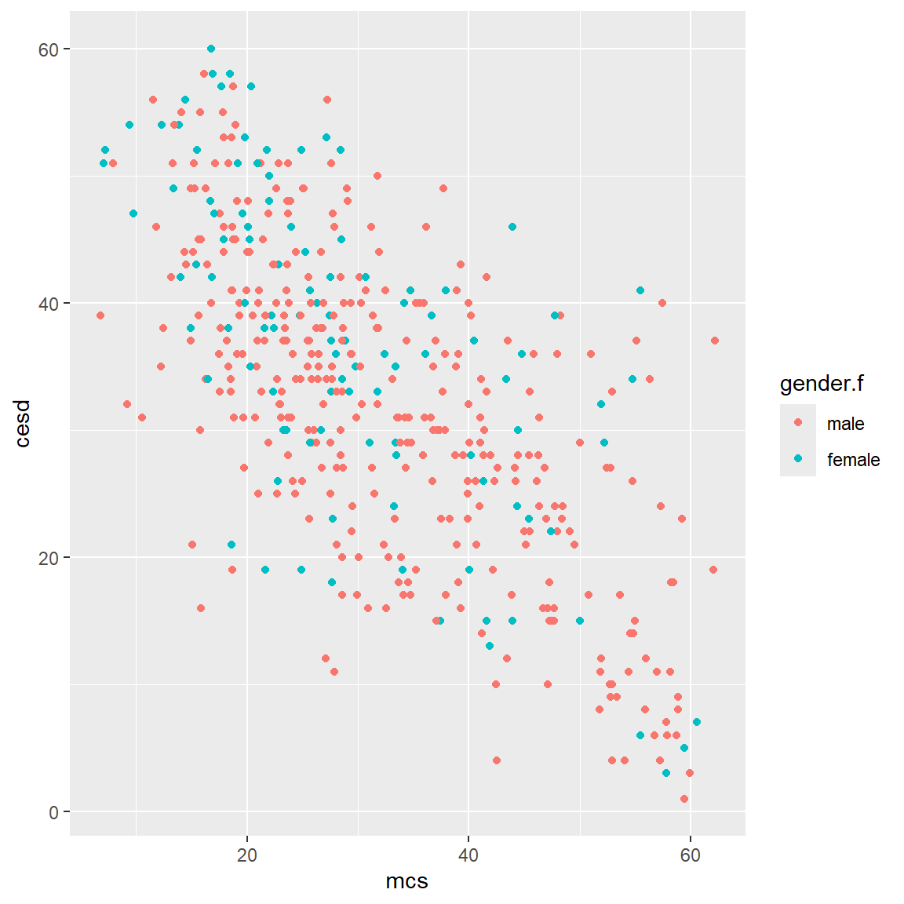
- Add better labels using
labs()
NoteA little text wrangling
In the long caption I added below, I inserted \n to add a line break. Learn more at:
TipAligning aesthetic with legend title
Since we used gender.f for the aesthetic for color, when we want to change the label for the legend title we use color to assign the custom legend for that aesthetic - otherwise the legend title defaults to the variable name “gender.f”.
# add title, footnote, and better axis labels
# color by gender
# update legend title
# \n inserts line break in long caption
ggplot(data = helpdata,
aes(x = mcs,
y = cesd,
color = gender.f)) +
geom_point() +
labs(
title = "CESD Scores by MCS Scores",
x = "CESD Scores",
y = "MCS Scores",
color = "Gender",
caption = "CESD = Center for Epidemiological Studies-Depression \nand MCS = Mental Component Scale for SF36 Quality of Life"
)
- Add “best fit” linear regression model lines to the plot by gender by adding the layer
geom_smooth(method = "lm").
# add best fit lines by gender
ggplot(data = helpdata,
aes(x = mcs,
y = cesd,
color = gender.f)) +
geom_point() +
geom_smooth(method = "lm") +
labs(
title = "CESD Scores by MCS Scores",
subtitle = "Models by Gender",
x = "CESD Scores",
y = "MCS Scores",
color = "Gender",
caption = "CESD = Center for Epidemiological Studies-Depression \nand MCS = Mental Component Scale for SF36 Quality of Life"
)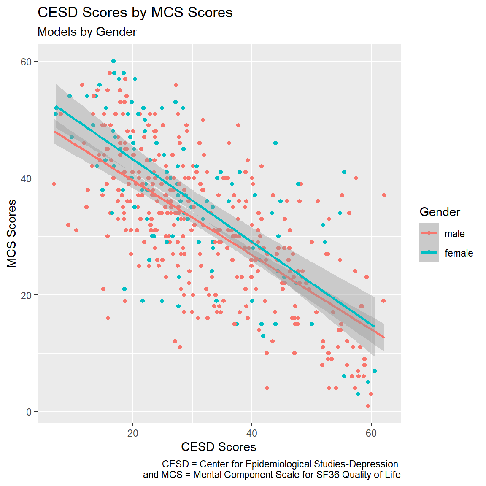
SAS - Visualizations with PROC SGPLOT
PROC SGPLOT is also really useful for making graphics visualizations in SAS. Here is the SAS code to make plots similar to what we did above.
* scatterplot of mcs and cesd;
proc sgplot data=helpfmt;
scatter x=mcs y=cesd;
run;
* color by gender;
proc sgplot data=helpfmt;
scatter x=mcs y=cesd / group=female;
run;
* add best fit lines by group;
proc sgplot data=helpfmt;
reg x=mcs y=cesd / group=female;
run;
* add title, footnotes,
update xaxis and yaxis labels
and legend title
add confidence bands for best fit lines;
TITLE1 "CESD Scores by MCS Scores";
FOOTNOTE1 "CESD = Center for Epidemiological Studies-Depression";
FOOTNOTE2 "MCS = Mental Component Scale for SF36 Quality of Life";
proc sgplot data=helpfmt;
reg x=mcs y=cesd / clm group=female;
xaxis label="MCS Scores";
yaxis label="CESD Scores";
keylegend / title="Gender";
run;
TITLE; FOOTNOTE; /* Clears the titles and footnotes */OPTIONAL PLOT EXAMPLE
For the plot example below, we need to first gather some summary statistics and save them into a new dataset object. We will build the plot below using the original dataset ToothGrowth (which is a built-in dataset) AND the tg.summary data object.
We will be building this error bar plot showing the means +- standard deviations of tooth lengths over 3 dose levels of Vitamin C from either Vitamin C (VC) supplements or orange juice(OJ). And we’re going to also show the data points overlaid on top of the errorbars.
We will build the plot as follows:
- data source =
ToothGrowth - aesthetics x=
doseand y=len - to show connections between the means use
geom_line() - to make the points for the means use
geom_point() - to make the errorbars (+/-) standard deviations use
geom_errorbar() - to overlay the original individual data points use
geom_jitter()- within this geom I have added aesthetics to customizecolor,shapeandfillfor the points according to the supplement type (VC vs OJ) - I have also used the
shape_xxxx_manual()functions to set the specific- point “shapes”, see
help(par, package = "graphics")and scroll through the options for “pch” also seehelp(points, package = "graphics"). - outline “color” for which I used two of the built-in colors, see a full list by running
colors() - point “fill” colors for which I used HEXCOLOR codes, you can pretty much use any hexadecimal code for color, see example codes at https://htmlcolorcodes.com/
- point “shapes”, see
- I also added a
facet_wrap()to create a 2 panel plot for each supplement - I added custom labels
- most of these we’ve used in the above examples
- for the caption I actually included some “markdown” syntax to allow for more custom text formatting - to use these formats I had to first load the
ggtextpackage, and add thetheme(plot.caption = element_markdown()) - to customize the “legend” title, I set
color=,shape=andfill=to the same text since all of these aesthetics are aligned with the same variablesuppfor the supplement type.
# OPTIONAL PLOT EXAMPLE
# first get summary stats
# build error bar using stats
# means +/- SD for error bars
#
# use layers and multiple data sources
# to make lines plus points
# and add custom shapes
# custom color outlines and fills
# by groups
#
# add ggtext package to enable markdown
# for formatting text in the caption
# see theme(plot.caption = ) below
library(ggtext)
# use ToothGrowth builtin dataset
# get summary stats
tg.summary <- ToothGrowth %>%
group_by(dose) %>%
summarise(
sd = sd(len, na.rm = TRUE),
len = mean(len)
)
tg.summary# A tibble: 3 × 3
dose sd len
<dbl> <dbl> <dbl>
1 0.5 4.50 10.6
2 1 4.42 19.7
3 2 3.77 26.1# Combine with jitter points
ggplot(ToothGrowth,
aes(x=dose,
y=len)) +
geom_line(data = tg.summary,
aes(group = 1),
linewidth = 1.5) +
geom_point(data = tg.summary,
size = 2) +
geom_errorbar(aes(ymin = len-sd, ymax = len+sd),
width = 0.2,
linewidth = 1.5,
data = tg.summary) +
geom_jitter(position = position_jitter(0.2),
aes(color = supp,
shape = supp,
fill = supp),
size = 3) +
scale_shape_manual(values = c(21, 24)) +
scale_color_manual(values = c("black",
"blue")) +
scale_fill_manual(values = c("#cf34eb",
"#34eb4c")) +
facet_wrap(vars(supp)) +
labs(x = "Dose (mg/day)",
y = "Length",
title = "Guinea Pig Incisor Odontoblast Growth by Vitamin C Dose",
subtitle = "Means +/- SD",
caption = "Citation: Crampton, E. W. (1947). The growth of the odontoblast of the incisor teeth <br>as a criterion of vitamin C intake of the guinea pig. <br>*The Journal of Nutrition*, **33**_(5)_, 491–504. <br>*doi:10.1093/jn/33.5.491*.",
color = "Supplement Type",
shape = "Supplement Type",
fill = "Supplement Type") +
theme(plot.caption = element_markdown())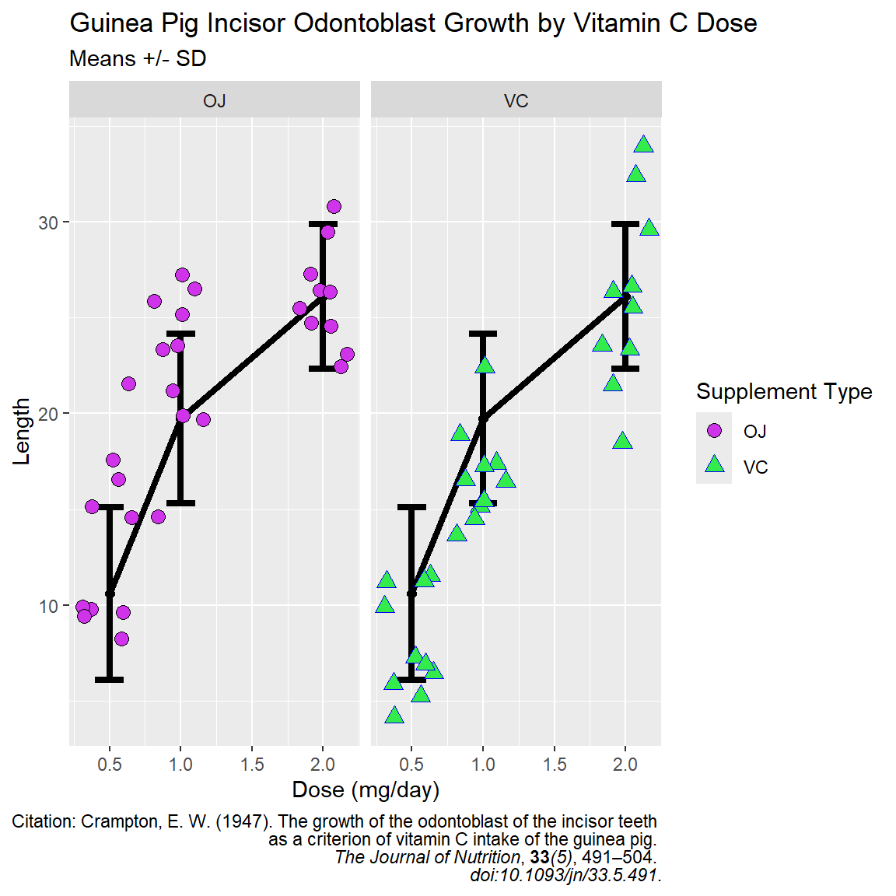
R and SAS Code For This Module
References
Boettiger, Carl. 2021. Knitcitations: Citations for Knitr Markdown Files. https://github.com/cboettig/knitcitations.
Iannone, Richard, Joe Cheng, Barret Schloerke, et al. 2026. Gt: Easily Create Presentation-Ready Display Tables. https://gt.rstudio.com.
R Core Team. 2026. R: A Language and Environment for Statistical Computing. R Foundation for Statistical Computing. https://doi.org/10.32614/R.manuals.
Samet, Jeffrey H., Mary Jo Larson, Nicholas J. Horton, Kathleen Doyle, Michael Winter, and Richard Saitz. 2003. “Linking Alcohol- and Drug-Dependent Adults to Primary Medical Care: A Randomized Controlled Trial of a Multi-Disciplinary Health Intervention in a Detoxification Unit.” Addiction 98 (4): 509–16. https://doi.org/10.1046/j.1360-0443.2003.00328.x.
Sjoberg, Daniel D., Joseph Larmarange, Michael Curry, et al. 2025. Gtsummary: Presentation-Ready Data Summary and Analytic Result Tables. https://github.com/ddsjoberg/gtsummary.
Sjoberg, Daniel D., Karissa Whiting, Michael Curry, Jessica A. Lavery, and Joseph Larmarange. 2021. “Reproducible Summary Tables with the Gtsummary Package.” The R Journal 13: 570–80. https://doi.org/10.32614/RJ-2021-053.
Warnes, Gregory R., Ben Bolker, Thomas Lumley, et al. 2022. Gmodels: Various r Programming Tools for Model Fitting. https://doi.org/10.32614/CRAN.package.gmodels.
Wickham, Hadley. 2016. Ggplot2: Elegant Graphics for Data Analysis. Springer-Verlag New York. https://ggplot2.tidyverse.org.
Wickham, Hadley, Winston Chang, Lionel Henry, et al. 2025. Ggplot2: Create Elegant Data Visualisations Using the Grammar of Graphics. https://ggplot2.tidyverse.org.
Wickham, Hadley, Romain François, Lionel Henry, Kirill Müller, and Davis Vaughan. 2026. Dplyr: A Grammar of Data Manipulation. https://dplyr.tidyverse.org.
Wickham, Hadley, Jim Hester, and Jennifer Bryan. 2026. Readr: Read Rectangular Text Data. https://readr.tidyverse.org.
Wickham, Hadley, Evan Miller, and Danny Smith. 2025. Haven: Import and Export SPSS, Stata and SAS Files. https://haven.tidyverse.org.
Wilke, Claus O., and Brenton M. Wiernik. 2022. Ggtext: Improved Text Rendering Support for Ggplot2. https://wilkelab.org/ggtext/.